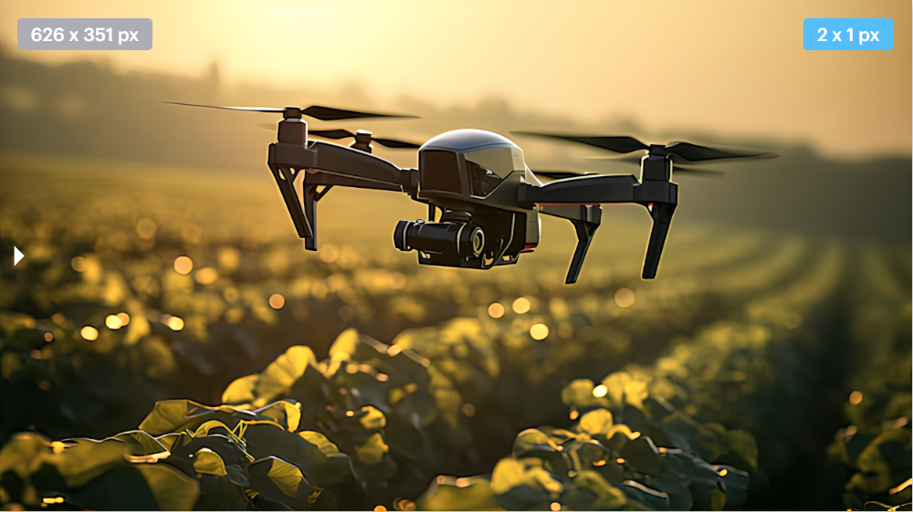

Live Telemetry
Monitorez les paramètres du vol et les prédictions IA en temps réel.
Camera Feed (Primary)

LIVE
Object Detection: Active
System Logs
[14:02:05] [IA] Random Forest: Consommation optimisée (-12%).
[14:02:10] [VISION] Plant stress detected at Sector B-4.
[14:02:15] [CTRL] Adjusting altitude to 45m for detailed scan.
[14:02:40] [SYS] Connection to Ground Control stabilised at 98%.